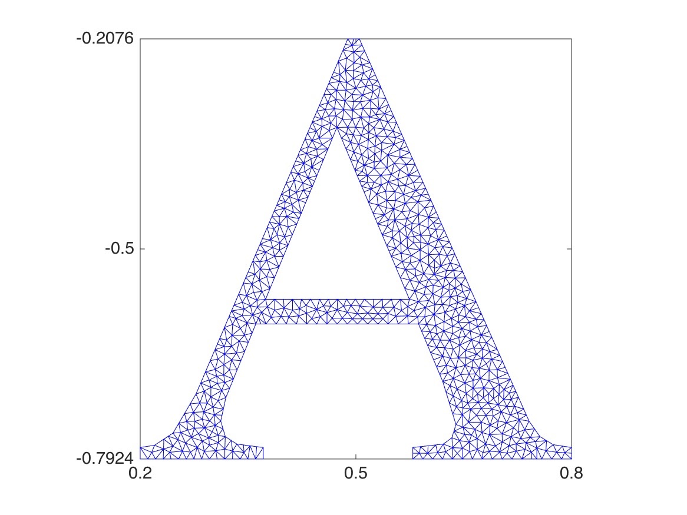
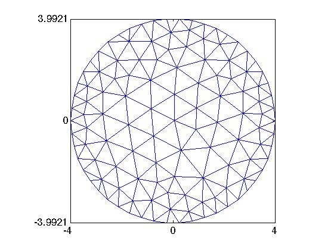
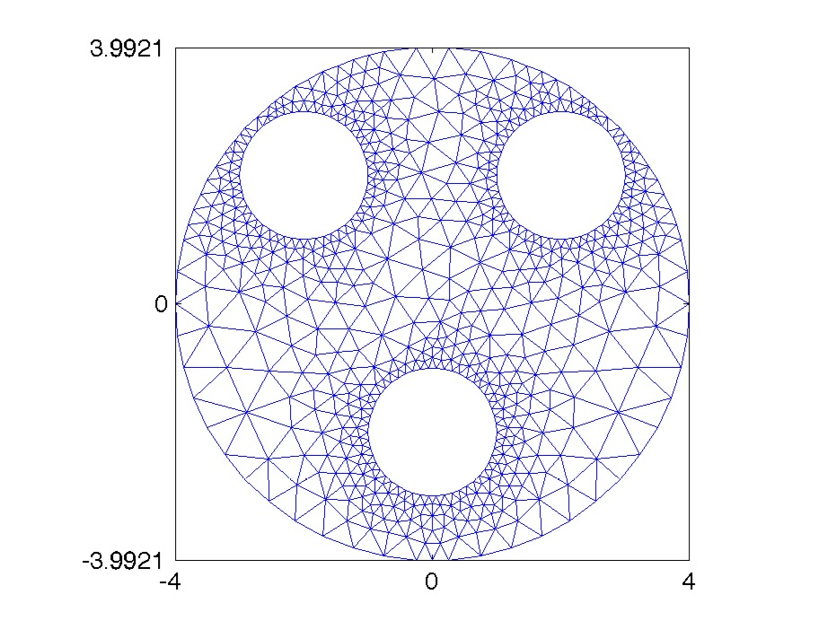
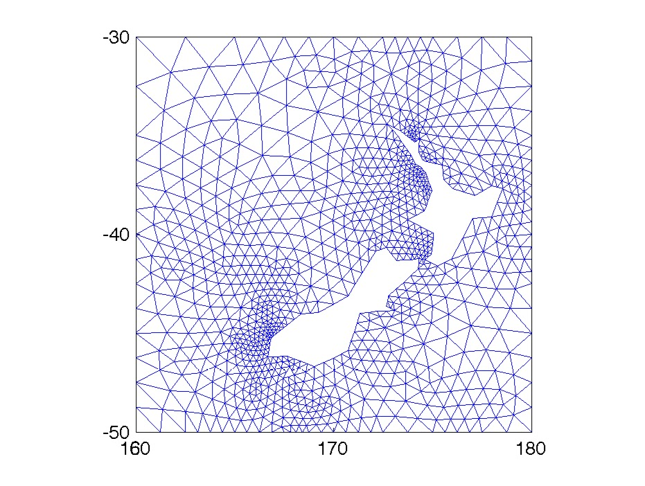
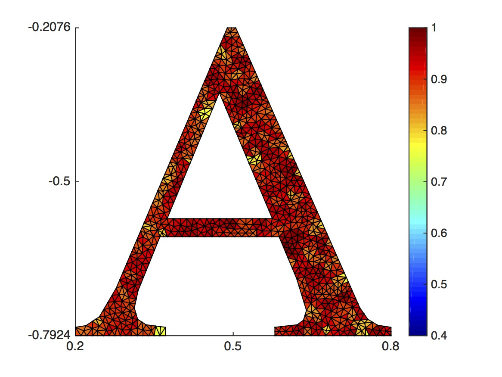
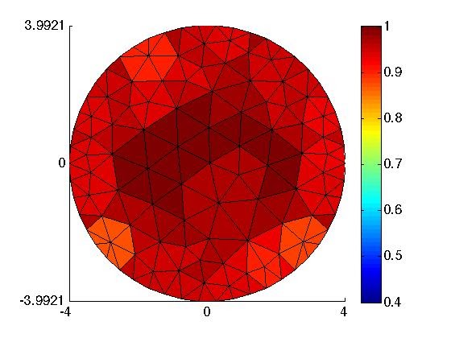
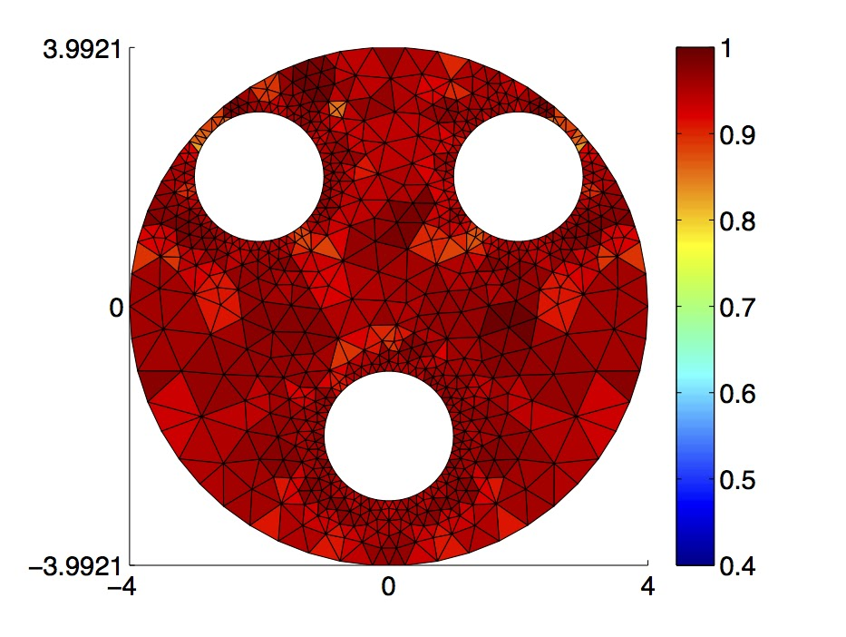
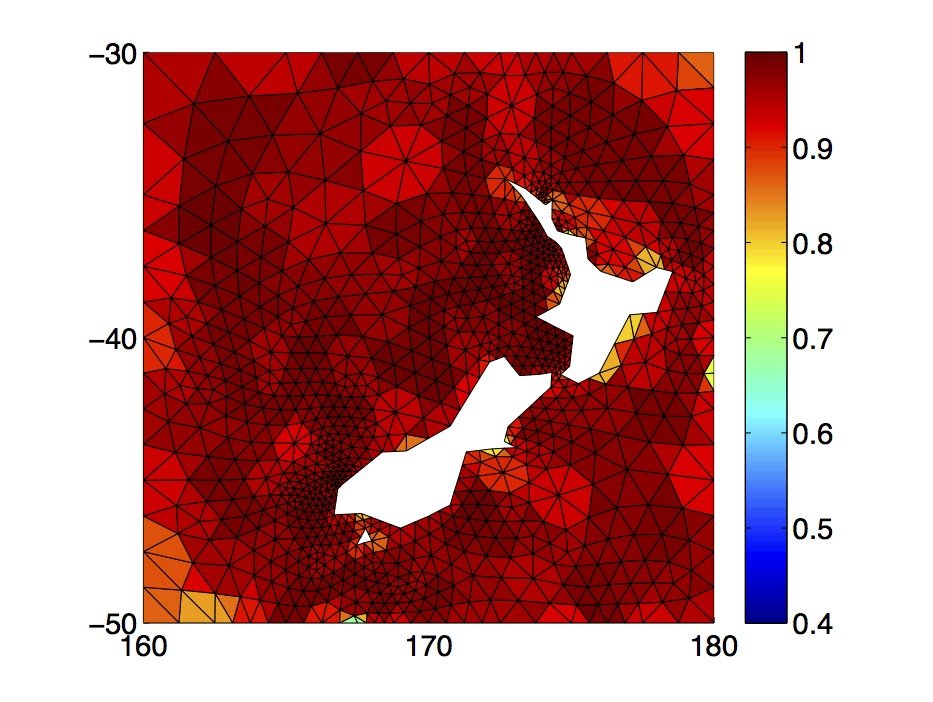

About me
Dimitrios Mitsotakis is a mathematician and an expert in the theory of water waves and the numerical analysis of partial differential equations. His primary focus is on developing numerical methods to solve models for water waves and studying real-world applications, such as the generation of tsunamis. One of his significant contributions lies in the theory and numerical analysis of Boussinesq systems for nonlinear and dispersive water waves. Dimitrios has also created numerical models for simulating the generation and propagation of tsunami waves, as well as the dispersive run-up.
In his research, Dimitrios has investigated the convergence and error estimates of various Finite Element Methods applied to nonlinear and dispersive wave equations. His interests extend to interfacial water waves, waves in superfluids, and blood flow problems. He favors the use of Finite Element, Spectral, Finite Volume, and Discontinuous Galerkin methods in his numerical approaches.
Dimitrios obtained his bachelor's degree with the highest honors (first in class) from the University of Crete. He further pursued a master's degree and a Ph.D. in Applied and Numerical Analysis, both from the University of Athens. His experience with high-performance computing began during his time as a visiting student at the Edinburgh Parallel Computing Center at The University of Edinburgh in 2000. Dimitrios has held positions at various institutions, including Université Paris-Saclay, the University of Minnesota, and the University of California, Merced. Since 2014, Dimitrios has been affiliated with the School of Mathematics and Statistics at Victoria University of Wellington, currently serving as an associate professor / reader.
h-index (Scopus): 20 — subject to change
MR Erdős number: 4
If you are a student interested in conducting research in applied mathematics, fluid mechanics, numerical analysis or scientific computing, please don't hesitate to contact me.







